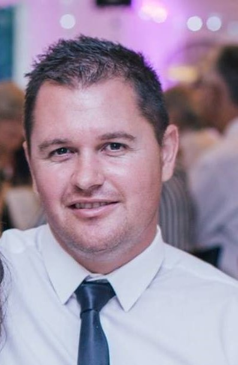

Ashley Clive Marks

Personal Statement
A goal orientated individual who is focused, and target driven with extensive sales experience predominantly within the automobile market.
Education
Scottburgh High School
- National Matric Certificate (NQF 4)
- Achievement Date 2003
SAPPI
- Forklift Licence
- Overhead Crane Licence
- Achievement Date: 2005
Work experience
Security Weighbridge Operator
- Company: Sappi Saiccor / Alert Security
- Umkomaas South Africa
- March 2004 to February 2005
Junior Operator M.G.O Loader and Analyst
- Company: Sappi Saiccor
- Umkomaas South Africa
- (February 2005 to October 2008)
Events, Promotions and catering Coordinator
- Company: Off to Work
- London Central UK
- Temp Work
- December 2009 to November 2010
Bartender
- Company: Novus Leisure Langley + Alibi and Agenda
- London Central UK
- Temp Work
- April 2009 to October 2010
Construction Worker
- Company: Speedy Labour
- London,Wimbledon UK
- Temp Work
- April 2009 to October 2010
Used Car Sales Executive Auto Market
(01 May 2011 to 30 April 2012)
- Company: Auto Market
- Randburg South Africa
Duties and responsibilities:
- Complete Offer to purchases with customers
- Quotations and Invoices
- Used Vehicle Appraisals
- Submit Finance Applications
- Assist with Dealership Stocking
- Handling of Petty Cash
- License and Registration
- Sourcing and Ordering of Parts
- Refurbishment/Quotes/Price comparison/Service bookings
- Arranging Vehicle Layout on the stand
- Prospecting
- Advertising of Vehicles on various online platforms
- Working under pressure and Achieve KPI Targets • Client Relationship Management and Client Retention
Used Car Sales Manager Auto Market
(01 May 2011 to 30 April 2012)
- Company: Auto Market
- Randburg South Africa
Reason for Resignation: Relocated to Cape Town to be closer to Family
Duties and responsibilities
Vehicle Sourcing
- Evaluating applicable wholesale vehicle brokers
- Conducting vehicle appraisals (ROI analysis-Return on Investment)
- Contracting of vehicle brokers
- Establishing and maintaining client relationships (client facing)
Procurement
- Facilitation of end-to-end financial transaction
- Responsible for arrangement of vehicle insurance prior to delivery
- Warehousing / Storage
- Vehicle display arrangements
- Marketing
- Responsible for entire company's marketing (all platforms) o Digital (internet, social media, etc.)
Human Resources
- Sourcing sales employees
- Hiring and managing employees
- Training / mentoring o Defining and enforcing KPI's
- Performance management
Sales
- Management of entire sales force
- Direct customer engagement After Sales
- Managing and maintaining customer relationships
Used Car Sales Executive Volkswagen
(05 Dec 2020 to 18 March 2022)
- Company: Claremont VW Mastercars
- Claremont, Cape Town
Duties and responsibilities:
- Facilitation of end-to-end financial transaction
- Responsible for arrangement of vehicle insurance prior to deliver Warehousing / Storage
- Vehicle display arrangements
Sales
- Direct customer engagement
- Generate own Leads
- Cold Calling
- Sourcing vehicle trade ins
- After Sales
- Managing and maintaining customer relationships
Used Car Sales Executive Nissan
(21 March 2022 to July 2022)
- Company: Group One Nissan
- Kuilsriver, Cape Town
Duties and responsibilities:
- Facilitation of end-to-end financial transaction
- Responsible for arrangement of vehicle insurance prior to delivery Warehousing / Storage
- Vehicle display arrangements
- Sales
- Direct customer engagement
- Generate own Leads
- Cold Calling
- Sourcing vehicle trade ins After Sales
- Managing and maintaining customer relationships
Used Car Sales Executive WP Motors
(August 2022 to August 2023)
- Company: WP Motors
- Bellville Cape Town
Other